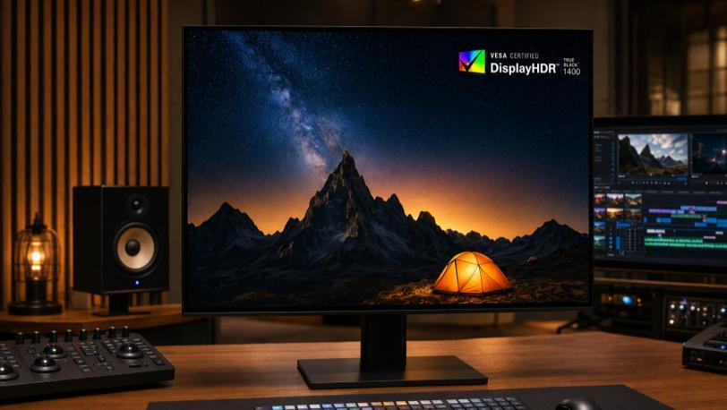
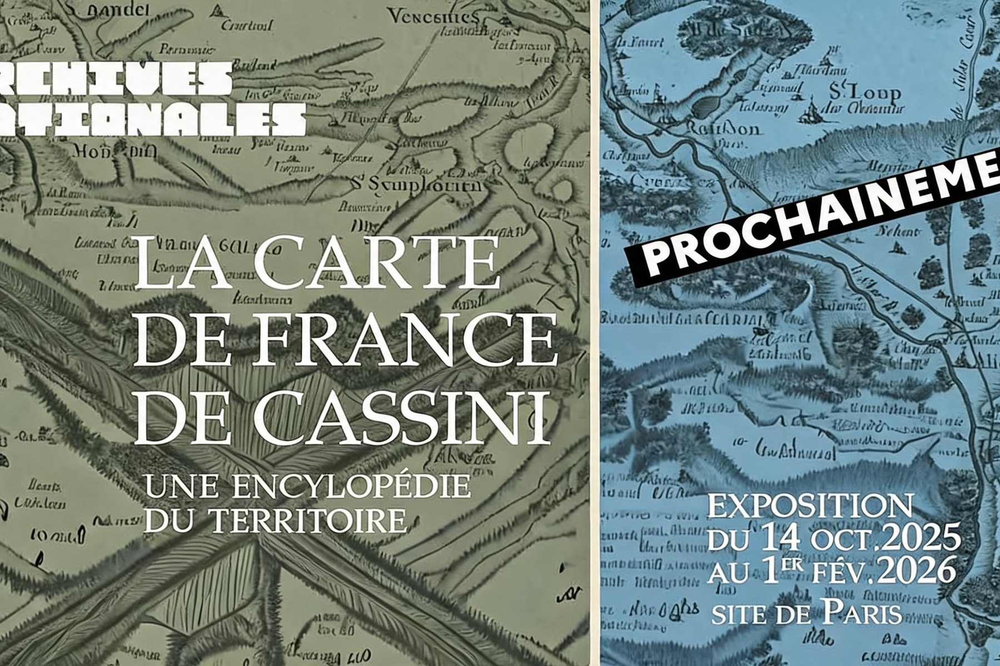

论文中的一个案例01 / 04
博物馆开幕，还是事实矛盾？
图像所呈现的
一座已竣工的博物馆，正在举行开幕仪式。
资料所记录的
在评估时，该博物馆仍处于建设阶段。
不支持图像描绘的建设阶段与证据相矛盾。
不止判断「是否由 AI 生成」
看起来真实的图像，也可能描绘错误的事实。EviScene 主动寻找证据，核实图中内容。
基于智能体的图像事实性评估 · 2026
一座已竣工的博物馆，正在举行开幕仪式。
在评估时，该博物馆仍处于建设阶段。
从图像出发无需用户额外提供文字断言。
主动核查事实将可见细节与外部证据联系起来。
给出有依据的判断通过训练学会核查的紧凑 9B 策略模型。
我们关注的问题
真实照片也可能产生误导，生成图像也可能描绘符合事实的场景。图像来源与内容事实性，是两个不同的问题。
识别其中可核查的人物、物体、事件、文字与背景。
寻找相关来源，并检查其中的细节是否与图像描绘的情境相符。
支持 不支持
同时给出与证据对应的解释。
EviScene 智能体
多模态 ReAct 策略自主选择检查哪些细节、去哪里搜索，以及何时已有足够证据得出结论。
理解场景及其细节，提取具体、可核查的线索，而不是仅凭视觉上的合理性作判断。
通过网页搜索与相关图像检索，识别对应的事件、实体和信息来源。
访问来源网页、比对参考图像，核对日期、身份及其他细节是否与输入图像一致。
解决尚未确定的问题，再根据收集到的证据给出判断。
这是一个循环核查过程，而非固定清单。新证据出现后，策略可以重新审视已有观察。
评测基准
EviLens 同时覆盖网页来源与受控构造的图像，用于评估内容的事实性，而不只是判断图像是否由 AI 生成。
发生了什么？涉及哪些主体？
可见细节是否经得起核查？
时间、地点和来源是否正确？
训练集 8,647 张 · 测试集 1,527 张，均含配套元数据。
训练紧凑的核查模型
通过监督微调，Qwen3.5-9B 策略模型学会调用工具、寻找证据并开展核查。
特权信息辅助的同策略自蒸馏，利用训练阶段的提示改进薄弱决策，同时保留成功行为。
学生模型仅依据原始、不含提示的上下文行动。
主要实验结果
EviScene 同时关注分类表现与结论的证据支撑。以下数值均与当前论文版本一致。
| 策略模型 | BAcc ↑ | 宏平均 F1 ↑ | SESR ↑ |
|---|---|---|---|
| GPT-5.5 | 78.13 | 72.06 | 50.49 |
| Gemini 3.7 Flash | 81.57 | 76.70 | 42.89 |
| Gemini 3.1 Pro | 62.42 | 64.17 | 32.68 |
| Qwen3.5-397B | 71.72 | 73.76 | 43.29 |
| Qwen3.5-9B · 基础模型 | 72.34 | 74.57 | 42.89 |
| Qwen3.5-9B · SFT | 78.81 | 75.69 | 50.49 |
| EviScene · SFT + PSD 9B | 79.05 | 74.67 | 52.26 |
各行均采用智能体设置。在所列策略中，EviScene 的 SESR 最高。
| Qwen3.5-9B 设置 | BAcc ↑ | 宏平均 F1 ↑ | SESR ↑ |
|---|---|---|---|
| 直接预测 | 65.70 | 57.26 | 1.70 |
| 基础智能体 | 72.34 | 74.57 | 42.89 |
| SFT 后 | 78.81 | 75.69 | 50.49 |
| SFT + PSD 后 | 79.05 | 74.67 | 52.26 |
相较基础智能体，SFT + PSD 的 BAcc 提升 6.71 个百分点，SESR 提升 9.37 个百分点。
| 工具配置 | BAcc ↑ | SESR ↑ | Δ SESR |
|---|---|---|---|
| 全部工具 · EviScene | 79.05 | 52.26 | — |
| 去掉网页搜索 | 74.37 | 35.89 | −16.37 |
| 去掉图像检索 | 74.52 | 40.01 | −12.25 |
| 去掉证据检查 | 76.55 | 46.04 | −6.22 |
证据检查包括来源网页访问与参考图像比对。去掉网页搜索后，SESR 的降幅最大。
BAcc 平衡准确率。 SESR 严格证据充分率：不仅要求判断正确，还要求满足证据质量标准。分数单位为百分比，差值单位为百分点。
看看如何核查
以下为论文中的四个定性案例，展示可见线索、检索到的证据，以及最终判断的依据。

支持缺少背景信息时，“DisplayHDR True Black 1400”这一标识看起来可疑。核查找到了 VESA 于 2026 年 7 月介绍该认证等级的文档。

不支持海报标注的展期为 2025 年 10 月 14 日至 2026 年 2 月 1 日，而检索到的展期为 2026 年 10 月 14 日至 2027 年 2 月 1 日。
图像描绘了一座已竣工博物馆的开幕仪式，但项目记录显示，在论文评估时，berlin modern 仍处于建设阶段。
核查识别了场地与活动。法国文化部的资料确认，该启动活动于 2025 年 1 月 21 日在红磨坊举行。
了解项目
从论文了解方法，查看代码实现，并通过统一的 Hugging Face 项目获取模型与 EviLens 资源。
涵盖方法、基准、实验及补充分析。论文 PDF 与原始图示保留英文。
阅读 PDF智能体运行时、工具集成、SFT 与 PSD 训练及评测代码。
GitHub 仓库统一管理 SFT 与原版 PSD 权重、EviLens 图像和元数据、代码及论文。具体开放情况以仓库说明为准。
Hugging Face 项目引用
@misc{wang2026eviscene,
title = {EviScene: Beyond "Is It AI?" for Agentic Image Factuality Assessment},
author = {ZiAn Wang and Ruiqi Liu and Zhengbo Zhang and Yi Han and
Jialiang Shen and Ruoxin Chen and Manni Cui and Ximo Zhu and
Jin Jiang and Mingzhe Liu and Linhao Wang and Wenhao Wang and Shu Wu},
year = {2026},
url = {https://wangzian828.github.io/EVISCENE/}
}